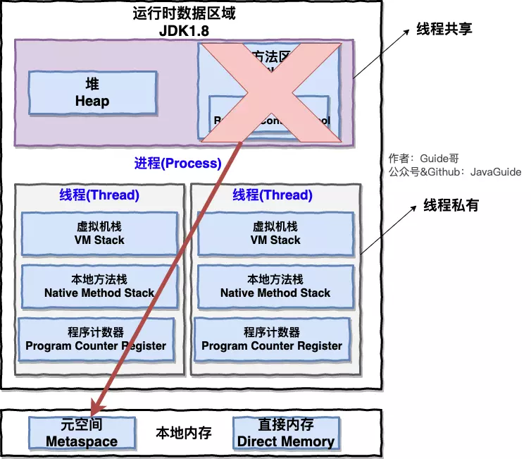
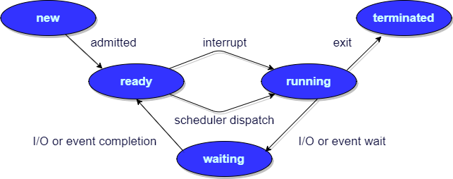

OS.md
1.1 什么是操作系统？¶
什么是操作系统？
四点介绍一下什么是操作系统吧！
- 操作系统（Operating System，简称 OS）是管理计算机硬件与软件资源的程序，是计算机的基石。
- 操作系统本质上是一个运行在计算机上的软件程序 ，用于管理计算机硬件和软件资源。 举例：运行在你电脑上的所有应用程序都通过操作系统来调用系统内存以及磁盘等等硬件。
- 操作系统存在屏蔽了硬件层的复杂性。 操作系统就像是硬件使用的负责人，统筹着各种相关事项。
- 操作系统的内核（Kernel）是操作系统的核心部分，它负责系统的内存管理，硬件设备的管理，文件系统的管理以及应用程序的管理。 内核是连接应用程序和硬件的桥梁，决定着系统的性能和稳定性。

1.2 系统调用¶
什么是系统调用呢？ 能不能详细介绍一下。
介绍系统调用之前，我们先来了解一下用户态和系统态。
根据进程访问资源的特点，我们可以把进程在系统上的运行分为两个级别：
- 用户态(user mode) : 用户态运行的进程可以直接读取用户程序的数据。
- 系统态(kernel mode):可以简单的理解系统态运行的进程或程序几乎可以访问计算机的任何资源，不受限制。
说了用户态和系统态之后，那么什么是系统调用呢？
我们运行的程序基本都是运行在用户态，如果我们调用操作系统提供的系统态级别的子功能咋办呢？那就需要系统调用了！
也就是说在我们运行的用户程序中，凡是与系统态级别的资源有关的操作（如文件管理、进程控制、内存管理等)，都必须通过系统调用方式向操作系统提出服务请求，并由操作系统代为完成。
这些系统调用按功能大致可分为如下几类：
- 设备管理。完成设备的请求或释放，以及设备启动等功能。
- 文件管理。完成文件的读、写、创建及删除等功能。
- 进程控制。完成进程的创建、撤销、阻塞及唤醒等功能。
- 进程通信。完成进程之间的消息传递或信号传递等功能。
- 内存管理。完成内存的分配、回收以及获取作业占用内存区大小及地址等功能。
二 进程和线程¶
2.1 进程和线程的区别¶
进程和线程的区别。
下图是 Java 内存区域，我们从 JVM 的角度来说一下线程和进程之间的关系吧！
如果你对 Java 内存区域 (运行时数据区) 这部分知识不太了解的话可以阅读一下这篇文章：《可能是把 Java 内存区域讲的最清楚的一篇文章》

从上图可以看出：一个进程中可以有多个线程，多个线程共享进程的堆和方法区 (JDK1.8 之后的元空间)资源，但是每个线程有自己的程序计数器、虚拟机栈 和 本地方法栈。
总结： 线程是进程划分成的更小的运行单位,一个进程在其执行的过程中可以产生多个线程。线程和进程最大的不同在于基本上各进程是独立的，而各线程则不一定，因为同一进程中的线程极有可能会相互影响。线程执行开销小，但不利于资源的管理和保护；而进程正相反。
2.2 进程有哪几种状态?¶
那你再说说进程有哪几种状态?
我们一般把进程大致分为 5 种状态，这一点和线程很像！
- 创建状态(new) ：进程正在被创建，尚未到就绪状态。
- 就绪状态(ready) ：进程已处于准备运行状态，即进程获得了除了处理器之外的一切所需资源，一旦得到处理器资源(处理器分配的时间片)即可运行。
- 运行状态(running) ：进程正在处理器上上运行(单核 CPU 下任意时刻只有一个进程处于运行状态)。
- 阻塞状态(waiting) ：又称为等待状态，进程正在等待某一事件而暂停运行如等待某资源为可用或等待 IO 操作完成。即使处理器空闲，该进程也不能运行。
- 结束状态(terminated) ：进程正在从系统中消失。可能是进程正常结束或其他原因中断退出运行。
订正：下图中 running 状态被 interrupt 向 ready 状态转换的箭头方向反了。

2.3 进程间的通信方式¶
进程间的通信常见的的有哪几种方式呢?
大概有 7 种常见的进程间的通信方式。
下面这部分总结参考了:《进程间通信 IPC (InterProcess Communication)》 这篇文章，推荐阅读，总结的非常不错。
- 管道/匿名管道(Pipes) ：用于具有亲缘关系的父子进程间或者兄弟进程之间的通信。
- 有名管道(Names Pipes) : 匿名管道由于没有名字，只能用于亲缘关系的进程间通信。为了克服这个缺点，提出了有名管道。有名管道严格遵循先进先出(first in first out)。有名管道以磁盘文件的方式存在，可以实现本机任意两个进程通信。
- 信号(Signal) ：信号是一种比较复杂的通信方式，用于通知接收进程某个事件已经发生；
- 消息队列(Message Queuing) ：消息队列是消息的链表,具有特定的格式,存放在内存中并由消息队列标识符标识。管道和消息队列的通信数据都是先进先出的原则。与管道（无名管道：只存在于内存中的文件；命名管道：存在于实际的磁盘介质或者文件系统）不同的是消息队列存放在内核中，只有在内核重启(即，操作系统重启)或者显示地删除一个消息队列时，该消息队列才会被真正的删除。消息队列可以实现消息的随机查询,消息不一定要以先进先出的次序读取,也可以按消息的类型读取.比 FIFO 更有优势。消息队列克服了信号承载信息量少，管道只能承载无格式字 节流以及缓冲区大小受限等缺。
- 信号量(Semaphores) ：信号量是一个计数器，用于多进程对共享数据的访问，信号量的意图在于进程间同步。这种通信方式主要用于解决与同步相关的问题并避免竞争条件。
- 共享内存(Shared memory) ：使得多个进程可以访问同一块内存空间，不同进程可以及时看到对方进程中对共享内存中数据的更新。这种方式需要依靠某种同步操作，如互斥锁和信号量等。可以说这是最有用的进程间通信方式。
- 套接字(Sockets) : 此方法主要用于在客户端和服务器之间通过网络进行通信。套接字是支持 TCP/IP 的网络通信的基本操作单元，可以看做是不同主机之间的进程进行双向通信的端点，简单的说就是通信的两方的一种约定，用套接字中的相关函数来完成通信过程。
2.4 线程间的同步的方式¶
那线程间的同步的方式有哪些呢?
线程同步是两个或多个共享关键资源的线程的并发执行。应该同步线程以避免关键的资源使用冲突。操作系统一般有下面三种线程同步的方式：
- 互斥量(Mutex)：采用互斥对象机制，只有拥有互斥对象的线程才有访问公共资源的权限。因为互斥对象只有一个，所以可以保证公共资源不会被多个线程同时访问。比如 Java 中的 synchronized 关键词和各种 Lock 都是这种机制。
- 信号量(Semphares) ：它允许同一时刻多个线程访问同一资源，但是需要控制同一时刻访问此资源的最大线程数量
- 事件(Event) :Wait/Notify：通过通知操作的方式来保持多线程同步，还可以方便的实现多线程优先级的比较操
2.5 进程的调度算法¶
你知道操作系统中进程的调度算法有哪些吗?
不是线程 并发的 别搞混了
- 先到先服务(FCFS)调度算法 : 从就绪队列中选择一个最先进入该队列的进程为之分配资源，使它立即执行并一直执行到完成或发生某事件而被阻塞放弃占用 CPU 时再重新调度。
- 短作业优先(SJF)的调度算法 : 从就绪队列中选出一个估计运行时间最短的进程为之分配资源，使它立即执行并一直执行到完成或发生某事件而被阻塞放弃占用 CPU 时再重新调度。
- 时间片轮转调度算法 : 时间片轮转调度是一种最古老，最简单，最公平且使用最广的算法，又称 RR(Round robin)调度。每个进程被分配一个时间段，称作它的时间片，即该进程允许运行的时间。
- 多级反馈队列调度算法 ：前面介绍的几种进程调度的算法都有一定的局限性。如短进程优先的调度算法，仅照顾了短进程而忽略了长进程 。多级反馈队列调度算法既能使高优先级的作业得到响应又能使短作业（进程）迅速完成。，因而它是目前被公认的一种较好的进程调度算法，UNIX 操作系统采取的便是这种调度算法。
- 优先级调度 ： 为每个流程分配优先级，首先执行具有最高优先级的进程，依此类推。具有相同优先级的进程以 FCFS 方式执行。可以根据内存要求，时间要求或任何其他资源要求来确定优先级。
三 操作系统内存管理基础¶
3.1 内存管理介绍¶
操作系统的内存管理主要是做什么？
操作系统的内存管理主要负责内存的分配与回收（malloc 函数：申请内存，free 函数：释放内存），另外地址转换也就是将逻辑地址转换成相应的物理地址等功能也是操作系统内存管理做的事情。
3.2 常见的几种内存管理机制¶
操作系统的内存管理机制了解吗？内存管理有哪几种方式?
这个在学习操作系统的时候有了解过。
简单分为连续分配管理方式和非连续分配管理方式这两种。连续分配管理方式是指为一个用户程序分配一个连续的内存空间，常见的如 块式管理 。同样地，非连续分配管理方式允许一个程序使用的内存分布在离散或者说不相邻的内存中，常见的如页式管理 和 段式管理。
- 块式管理 ： 远古时代的计算机操系统的内存管理方式。将内存分为几个固定大小的块，每个块中只包含一个进程。如果程序运行需要内存的话，操作系统就分配给它一块，如果程序运行只需要很小的空间的话，分配的这块内存很大一部分几乎被浪费了。这些在每个块中未被利用的空间，我们称之为碎片。
- 页式管理 ：把主存分为大小相等且固定的一页一页的形式，页较小，相对相比于块式管理的划分力度更大，提高了内存利用率，减少了碎片。页式管理通过页表对应逻辑地址和物理地址。
- 段式管理 ： 页式管理虽然提高了内存利用率，但是页式管理其中的页实际并无任何实际意义。 段式管理把主存分为一段段的，每一段的空间又要比一页的空间小很多 。但是，最重要的是段是有实际意义的，每个段定义了一组逻辑信息，例如,有主程序段 MAIN、子程序段 X、数据段 D 及栈段 S 等。 段式管理通过段表对应逻辑地址和物理地址。
不过漏掉了一个很重要的 段页式管理机制 。段页式管理机制结合了段式管理和页式管理的优点。简单来说段页式管理机制就是把主存先分成若干段，每个段又分成若干页，也就是说 段页式管理机制 中段与段之间以及段的内部的都是离散的。
3.3 快表和多级页表¶
页表管理机制中有两个很重要的概念：快表和多级页表，这两个东西分别解决了页表管理中很重要的两个问题。你给我简单介绍一下吧！
在分页内存管理中，很重要的两点是：
- 虚拟地址到物理地址的转换要快。
- 解决虚拟地址空间大，页表也会很大的问题。
快表¶
感觉就是个索引
为了解决虚拟地址到物理地址的转换速度，操作系统在 页表方案 基础之上引入了 快表 来加速虚拟地址到物理地址的转换。我们可以把快表理解为一种特殊的高速缓冲存储器（Cache），其中的内容是页表的一部分或者全部内容。作为页表的 Cache，它的作用与页表相似，但是提高了访问速率。由于采用页表做地址转换，读写内存数据时 CPU 要访问两次主存。有了快表，有时只要访问一次高速缓冲存储器，一次主存，这样可加速查找并提高指令执行速度。
使用快表之后的地址转换流程是这样的：
- 根据虚拟地址中的页号查快表；
- 如果该页在快表中，直接从快表中读取相应的物理地址；
- 如果该页不在快表中，就访问内存中的页表，再从页表中得到物理地址，同时将页表中的该映射表项添加到快表中；
- 当快表填满后，又要登记新页时，就按照一定的淘汰策略淘汰掉快表中的一个页。
看完了之后你会发现快表和我们平时经常在我们开发的系统使用的缓存（比如 Redis）很像，的确是这样的，操作系统中的很多思想、很多经典的算法，你都可以在我们日常开发使用的各种工具或者框架中找到它们的影子。
多级页表¶
引入多级页表的主要目的是为了避免把全部页表一直放在内存中占用过多空间，特别是那些根本就不需要的页表就不需要保留在内存中。多级页表属于时间换空间的典型场景，具体可以查看下面这篇文章
总结¶
为了提高内存的空间性能，提出了多级页表的概念；但是提到空间性能是以浪费时间性能为基础的，因此为了补充损失的时间性能，提出了快表（即 TLB）的概念。 不论是快表还是多级页表实际上都利用到了程序的局部性原理，局部性原理在后面的虚拟内存这部分会介绍到。
3.4 分页机制和分段机制的共同点和区别¶
分页机制和分段机制有哪些共同点和区别呢？
- 共同点 ：
- 分页机制和分段机制都是为了提高内存利用率，较少内存碎片。
-
页和段都是离散存储的，所以两者都是离散分配内存的方式。但是，每个页和段中的内存是连续的。
-
区别 ：
- 页的大小是固定的，由操作系统决定；而段的大小不固定，取决于我们当前运行的程序。
- 分页仅仅是为了满足操作系统内存管理的需求，而段是逻辑信息的单位，在程序中可以体现为代码段，数据段，能够更好满足用户的需要。
3.5 逻辑(虚拟)地址和物理地址¶
映射
你刚刚还提到了逻辑地址和物理地址这两个概念，我不太清楚，你能为我解释一下不？
em...好的嘛！我们编程一般只有可能和逻辑地址打交道，比如在 C 语言中，指针里面存储的数值就可以理解成为内存里的一个地址，这个地址也就是我们说的逻辑地址，逻辑地址由操作系统决定。物理地址指的是真实物理内存中地址，更具体一点来说就是内存地址寄存器中的地址。物理地址是内存单元真正的地址。
3.6 CPU 寻址了解吗?为什么需要虚拟地址空间?¶
CPU 寻址了解吗?为什么需要虚拟地址空间?
这部分内容参考了 Microsoft 官网的介绍，地址：https://msdn.microsoft.com/zh-cn/library/windows/hardware/hh439648(v=vs.85).aspx
现代处理器使用的是一种称为 虚拟寻址(Virtual Addressing) 的寻址方式。使用虚拟寻址，CPU 需要将虚拟地址翻译成物理地址，这样才能访问到真实的物理内存。 实际上完成虚拟地址转换为物理地址转换的硬件是 CPU 中含有一个被称为 内存管理单元（Memory Management Unit, MMU） 的硬件。如下图所示：

为什么要有虚拟地址空间呢？
先从没有虚拟地址空间的时候说起吧！没有虚拟地址空间的时候，程序都是直接访问和操作的都是物理内存 。但是这样有什么问题呢？
- 用户程序可以访问任意内存，寻址内存的每个字节，这样就很容易（有意或者无意）破坏操作系统，造成操作系统崩溃。
- 想要同时运行多个程序特别困难，比如你想同时运行一个微信和一个 QQ 音乐都不行。为什么呢？举个简单的例子：微信在运行的时候给内存地址 1xxx 赋值后，QQ 音乐也同样给内存地址 1xxx 赋值，那么 QQ 音乐对内存的赋值就会覆盖微信之前所赋的值，这就造成了微信这个程序就会崩溃。
总结来说：如果直接把物理地址暴露出来的话会带来严重问题，比如可能对操作系统造成伤害以及给同时运行多个程序造成困难。
通过虚拟地址访问内存有以下优势：
- 程序可以使用一系列相邻的虚拟地址来访问物理内存中不相邻的大内存缓冲区。
- 程序可以使用一系列虚拟地址来访问大于可用物理内存的内存缓冲区。当物理内存的供应量变小时，内存管理器会将物理内存页（通常大小为 4 KB）保存到磁盘文件。数据或代码页会根据需要在物理内存与磁盘之间移动。
- 不同进程使用的虚拟地址彼此隔离。一个进程中的代码无法更改正在由另一进程或操作系统使用的物理内存。
四 虚拟内存¶
4.1 什么是虚拟内存(Virtual Memory)?¶
再问你一个常识性的问题！什么是虚拟内存(Virtual Memory)?
有些内存不是常用的 放到磁盘里 可以省空间
时间换空间
这个在我们平时使用电脑特别是 Windows 系统的时候太常见了。很多时候我们使用点开了很多占内存的软件，这些软件占用的内存可能已经远远超出了我们电脑本身具有的物理内存。为什么可以这样呢？ 正是因为 虚拟内存 的存在，通过 虚拟内存 可以让程序可以拥有超过系统物理内存大小的可用内存空间。另外，虚拟内存为每个进程提供了一个一致的、私有的地址空间，它让每个进程产生了一种自己在独享主存的错觉（每个进程拥有一片连续完整的内存空间）。这样会更加有效地管理内存并减少出错。
虚拟内存是计算机系统内存管理的一种技术，我们可以手动设置自己电脑的虚拟内存。不要单纯认为虚拟内存只是“使用硬盘空间来扩展内存“的技术。虚拟内存的重要意义是它定义了一个连续的虚拟地址空间，并且 把内存扩展到硬盘空间。推荐阅读：《虚拟内存的那点事儿》
维基百科中有几句话是这样介绍虚拟内存的。
虚拟内存 使得应用程序认为它拥有连续的可用的内存（一个连续完整的地址空间），而实际上，它通常是被分隔成多个物理内存碎片，还有部分暂时存储在外部磁盘存储器上，在需要时进行数据交换。与没有使用虚拟内存技术的系统相比，使用这种技术的系统使得大型程序的编写变得更容易，对真正的物理内存（例如 RAM）的使用也更有效率。目前，大多数操作系统都使用了虚拟内存，如 Windows 家族的“虚拟内存”；Linux 的“交换空间”等。From:https://zh.wikipedia.org/wiki/虚拟内存
4.2 局部性原理¶
要想更好地理解虚拟内存技术，必须要知道计算机中著名的局部性原理。另外，局部性原理既适用于程序结构，也适用于数据结构，是非常重要的一个概念。
csapp 里讲的是 数据结构的局部性 其实一样
最近使用的 + 空间距离上最近的
局部性原理是虚拟内存技术的基础，正是因为程序运行具有局部性原理，才可以只装入部分程序到内存就开始运行。
以下内容摘自《计算机操作系统教程》 第 4 章存储器管理。
早在 1968 年的时候，就有人指出我们的程序在执行的时候往往呈现局部性规律，也就是说在某个较短的时间段内，程序执行局限于某一小部分，程序访问的存储空间也局限于某个区域。
局部性原理表现在以下两个方面：
- 时间局部性 ：如果程序中的某条指令一旦执行，不久以后该指令可能再次执行；如果某数据被访问过，不久以后该数据可能再次被访问。产生时间局部性的典型原因，是由于在程序中存在着大量的循环操作。
- 空间局部性 ：一旦程序访问了某个存储单元，在不久之后，其附近的存储单元也将被访问，即程序在一段时间内所访问的地址，可能集中在一定的范围之内，这是因为指令通常是顺序存放、顺序执行的，数据也一般是以向量、数组、表等形式簇聚存储的。
时间局部性是通过将近来使用的指令和数据保存到高速缓存存储器中，并使用高速缓存的层次结构实现。空间局部性通常是使用较大的高速缓存，并将预取机制集成到高速缓存控制逻辑中实现。虚拟内存技术实际上就是建立了 “内存一外存”的两级存储器的结构，利用局部性原理实现髙速缓存。
4.3 虚拟存储器¶
勘误：虚拟存储器又叫做虚拟内存，都是 Virtual Memory 的翻译，属于同一个概念。
这部分内容来自：王道考研操作系统知识点整理。
基于局部性原理，在程序装入时，可以将程序的一部分装入内存，而将其他部分留在外存，就可以启动程序执行。由于外存往往比内存大很多，所以我们运行的软件的内存大小实际上是可以比计算机系统实际的内存大小大的。在程序执行过程中，当所访问的信息不在内存时，由操作系统将所需要的部分调入内存，然后继续执行程序。另一方面，操作系统将内存中暂时不使用的内容换到外存上，从而腾出空间存放将要调入内存的信息。这样，计算机好像为用户提供了一个比实际内存大的多的存储器——虚拟存储器。
实际上，我觉得虚拟内存同样是一种时间换空间的策略，你用 CPU 的计算时间，页的调入调出花费的时间，换来了一个虚拟的更大的空间来支持程序的运行。不得不感叹，程序世界几乎不是时间换空间就是空间换时间。
4.4 虚拟内存的技术实现¶
虚拟内存技术的实现呢？
虚拟内存的实现需要建立在离散分配的内存管理方式的基础上。 虚拟内存的实现有以下三种方式：
- 请求分页存储管理 ：建立在分页管理之上，为了支持虚拟存储器功能而增加了请求调页功能和页面置换功能。请求分页是目前最常用的一种实现虚拟存储器的方法。请求分页存储管理系统中，在作业开始运行之前，仅装入当前要执行的部分段即可运行。假如在作业运行的过程中发现要访问的页面不在内存，则由处理器通知操作系统按照对应的页面置换算法将相应的页面调入到主存，同时操作系统也可以将暂时不用的页面置换到外存中。
- 请求分段存储管理 ：建立在分段存储管理之上，增加了请求调段功能、分段置换功能。请求分段储存管理方式就如同请求分页储存管理方式一样，在作业开始运行之前，仅装入当前要执行的部分段即可运行；在执行过程中，可使用请求调入中断动态装入要访问但又不在内存的程序段；当内存空间已满，而又需要装入新的段时，根据置换功能适当调出某个段，以便腾出空间而装入新的段。
- 请求段页式存储管理
这里多说一下？很多人容易搞混请求分页与分页存储管理，两者有何不同呢？
请求分页存储管理建立在分页管理之上。他们的根本区别是是否将程序全部所需的全部地址空间都装入主存，这也是请求分页存储管理可以提供虚拟内存的原因，我们在上面已经分析过了。
它们之间的根本区别在于是否将一作业的全部地址空间同时装入主存。请求分页存储管理不要求将作业全部地址空间同时装入主存。基于这一点，请求分页存储管理可以提供虚存，而分页存储管理却不能提供虚存。
不管是上面那种实现方式，我们一般都需要：
- 一定容量的内存和外存：在载入程序的时候，只需要将程序的一部分装入内存，而将其他部分留在外存，然后程序就可以执行了；
- 缺页中断：如果需执行的指令或访问的数据尚未在内存（称为缺页或缺段），则由处理器通知操作系统将相应的页面或段调入到内存，然后继续执行程序；
- 虚拟地址空间 ：逻辑地址到物理地址的变换。
4.5 页面置换算法¶
虚拟内存管理很重要的一个概念就是页面置换算法。那你说一下 页面置换算法的作用?常见的页面置换算法有哪些?
经常叫人手撕 LRU
叫撕 LFU 直接G
地址映射过程中，若在页面中发现所要访问的页面不在内存中，则发生缺页中断 。
缺页中断 就是要访问的页不在主存，需要操作系统将其调入主存后再进行访问。 在这个时候，被内存映射的文件实际上成了一个分页交换文件。
当发生缺页中断时，如果当前内存中并没有空闲的页面，操作系统就必须在内存选择一个页面将其移出内存，以便为即将调入的页面让出空间。用来选择淘汰哪一页的规则叫做页面置换算法，我们可以把页面置换算法看成是淘汰页面的规则。
-
OPT 页面置换算法（最佳页面置换算法） ：最佳(Optimal, OPT)置换算法所选择的被淘汰页面将是以后永不使用的，或者是在最长时间内不再被访问的页面,这样可以保证获得最低的缺页率。但由于人们目前无法预知进程在内存下的若千页面中哪个是未来最长时间内不再被访问的，因而该算法无法实现。一般作为衡量其他置换算法的方法。
-
FIFO（First In First Out） 页面置换算法（先进先出页面置换算法） : 总是淘汰最先进入内存的页面，即选择在内存中驻留时间最久的页面进行淘汰。
-
LRU （Least Currently Used）页面置换算法（最近最久未使用页面置换算法） ：LRU算法赋予每个页面一个访问字段，用来记录一个页面自上次被访问以来所经历的时间 T，当须淘汰一个页面时，选择现有页面中其 T 值最大的，即最近最久未使用的页面予以淘汰。
-
LFU （Least Frequently Used）页面置换算法（最少使用页面置换算法） : 该置换算法选择在之前时期使用最少的页面作为淘汰页。
Reference¶
- 《计算机操作系统—汤小丹》第四版
- 《深入理解计算机系统》
- https://zh.wikipedia.org/wiki/输入输出内存管理单元
- https://baike.baidu.com/item/快表/19781679
- https://www.jianshu.com/p/1d47ed0b46d5
- https://www.studytonight.com/operating-system
- https://www.geeksforgeeks.org/interprocess-communication-methods/
- https://juejin.im/post/59f8691b51882534af254317
- 王道考研操作系统知识点整理： https://wizardforcel.gitbooks.io/wangdaokaoyan-os/content/13.html